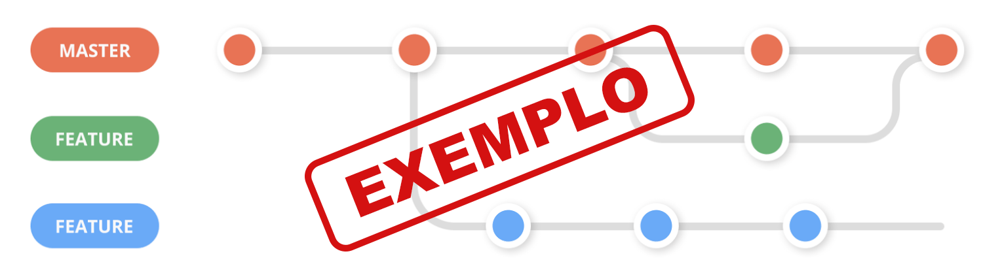

Introdução
Informações básicas do projeto como nome e membros da equipe.
Informações Gerais
- Projeto: Gestão Financeira - InvestPro
- Repositório GitHub: GitHUb - G10 - Gestão Financeira
- Membros da equipe:
Contexto
Detalhes sobre o espaço de problema, justificativas e os objetivos do projeto.
Problema
Como estudantes universitários, vivemos constante tendo que controlar nossos gastos. Muitas vezes falta
dinheiro para ir em festas porque gastamos mal o dinehiro durante o mês. Pensando nisso, identificamos
que esse não é um problema só de universitários, mas sim da população em geral.
Para contextualizar, cerca de 45% dos brasileiros não fazem controle financeiro, 25% dos brasileiros não
conseguem pagar as contas em dia e 52% não tem nenhuma reserva financeira.
Com isso, identificamos que poderiamos amenizar a dor das pessoas caso existisse uma ajuda para
controlar suas finanças. Além disso, também seria essencial que apresentassemos ferramantas para
ajuda-los a poupar dinheiro e investir.
Imaginamos que, uma pessoa que está entrando agora no mercado de trabalho, não tem conhecimento de como
controlar suas finanças, e muito menos de como investir. Saber essas coisas poderia ser enssencial para
ter uma vida de sucesso.
Objetivos
Ter uma gestão financeira bem feita é fundamental para o sucesso e a estabilidade de qualquer
indivíduo, família, empresa ou organização, envolve o controle e a administração adequada dos recursos
financeiros disponíveis, de modo a garantir que as metas financeiras sejam alcançadas de forma
sustentável.A proposta do nosso site é justamente essa, facilitar ao máximo a vida dos usuários,
mostrando para ele os caminhos inciais para uma vida finaceira de sucesso.
É visto que a maioria das pessoas não tem o hábito de controlar suas finanças, e isso acaba gerando
problemas futuros, como dívidas, atrasos, etc. Temos como objetivo que o nosso usuário não tenha que se
preocupar com isso e se organize da melhor forma possivel.
Seguindo a mesma ideia, gostariamos que nosso usuário tenha um contanto incial com o mundo dos
investimentos, e que ele possa ter uma noção de como funciona o mercado financeiro, e como ele pode
fazer parte dele. Acreditamos que o contato com esse mundo irá motivar ainda mais a pessoa.
Definimos como objetivo geral do nosso projeto, desenvolver um software para solucionar o problema
apresentado acima. E como objetivos específicos, temos:
- Desenvolver um site que seja intuitivo e de fácil acesso para usuário onde ele possa organizar e
visualizar seus gastos dessa forma sendo mais consciente com sua vida financeira;
- Desenvolver um site que apresente informações sobre o mercado financeiro e investimentos, para que o
usuário possa ter um contato inicial com esse mundo instigando sua curiosidade;
- Desenvolver um aplicação que diminuia a angustia do usuário em relação a sua vida financeira, e que diminuia a desigualdade ao acesso a esse tipo de produto
Justificativa
A educação financeira brasileira é basicamente inexsitente. Não se é ensinado na escolas e as pessoas
não buscam conhecimento fora delas.
Investimento é um assunto que assusta muitas pessoas, e por isso, além de ser visto como coisa que
apenas pessoas mais ricas fazem.
Motivados por esses pontos, almejamos mudar esse panorâma. Já foi visto que a introdução a educação
financeira cria melhores consumidores, mais poupadores e menos endividadores.
Dessa forma, a abordagem simplifica do controle de gastos e investimentos, pode ser um grande passo para
a mudança desse cenário. Vemos nisso uma oportunidade de trazer valor a sociedade.
Público-alvo
O público alvo do nosso projeto seriam primariamente 3 tipos de pessoas.
- Pessoas jovens que estão ingressando no mercado de trabalho e não tem conhecimento ou dificuldades de
como controlar suas finanças. O primeiro salário ja seria um ponto inicial para inciar hábitos de
poupança e controle de gastos. Além de começar a ter dinhiero para fazer pequenos investimentos.O foco
seria pessoas de renda menor que já tem acesso a internet. A sua formação educacional foi fraca e tem ansiedade com assuntos relacionado a finanças e matemática.;
- Pessoas que já tem uma vida financeira estabilizada, mas estão passando por algum tipo de dificuldade. Já
apresentam dívidas e desejam organizar seus gastos para conseguir pagar as contas em dia. A pessoa já
pode ter tentado usar outras ferramentas mas não encontrou facilidade em usa-las. Está buscando uma
proposta diferente. Tem um salário acima da média e acredita que não deveria estar passando por problemas financeiros. Realiza muitos gastos com cartão de crédito e não entende por que a fatura vêm tão alta;
- Jovens universitários que estão começando a ter uma vida financeira mais independente.Focando em pessoas que mudaram de cidade para estudar e estão começando
a ter gastos com moradia, alimentação, etc. Sentem a necessidade uma ferramenta para organizar seus gastos e
começar a ter hábitos de poupança. A pessoa está entrando no mundo adulto e se tornando independte dos
pais, axuliariamos nessa transição. O seu problema se atenuou por ter que dividir apartamento com outras pessoas e há dificuldades de prestar aos colegas do seu gasto com a casa ;
Concepção (Design Thinking)
Detalhes do processo de discovery do projeto.
Apresente o processo de discovery do projeto. Com foco na experiência do usuário, esse processo abrange a compreensão do contexto do problema e das características do usuário, a definição do problema, a geração de ideias, a prototipagem e a elaboração de uma proposta de solução
Processo de Design Thinking
O arquivo que se segue apresenta o resultado desse processo.
Apresente o processo de Design Thinking realizado pelo grupo e documentado por meio do software Miro. No documento apresentado, devem ser incluídos: (1) a matriz CSD, (2) o mapa de stakeholders, (3) as personas, (4) as respectivas propostas de valor e (5) o processo de ideação identificando as ideias levantadas e sua priorização.
Especificações do Projeto
Documentação das especificações do projeto.
Apresente as especificações do projeto, incluindo as histórias de usuário e os requisitos funcionais e não funcionais.
Histórias de Usuários
Com base na análise das personas foram identificadas as seguintes histórias de usuários:
Apresente aqui as histórias de usuário que são relevantes para o projeto de sua solução. As Histórias de Usuário consistem em uma ferramenta poderosa para a compreensão e elicitação dos requisitos funcionais e não funcionais da sua aplicação. Se possível, agrupe as histórias de usuário por contexto, para facilitar consultas recorrentes à essa parte do documento.
EU COMO...PERSONA |
QUERO/PRECISO...FUNCIONALIDADE |
PARA...MOTIVO/VALOR |
|---|---|---|
| Usuário do sistema | Registrar os gastos | Poder acompanhar os gastos |
| Usuário do sistema | Visualizar maiores despesas | Poder tomar decisões sobre suas finanças |
| Usuário do sistema | Saber quanto o retorno de um investimento | Poder escolher onde é melhor investir |
| Usuário do sistema | Aprender sobre finanças | Poder não cometer erros com o dinheiro |
| Usuário do sistema | Limitar seus gastos | Não gastar mais do que pode |
Requisitos
As tabelas que se seguem apresentam os requisitos funcionais e não funcionais que detalham o escopo do projeto.
Com base nas Histórias de Usuário, enumere os requisitos da sua solução. Classifique esses requisitos em dois grupos:
- Requisitos Funcionais (RF): correspondem a uma funcionalidade que deve estar presente na plataforma (ex: cadastro de usuário).
- Requisitos Não Funcionais (RNF): correspondem a uma característica técnica, seja de usabilidade, desempenho, confiabilidade, segurança ou outro (ex: suporte a dispositivos iOS e Android).
Lembre-se que cada requisito deve corresponder à uma e somente uma característica alvo da sua solução. Além disso, certifique-se de que todos os aspectos capturados nas Histórias de Usuário foram cobertos.
Requisitos Funcionais
| ID | Descrição do Requisito | Prioridade |
|---|---|---|
| RF-001 | Permitir que o usuário registre e acompanhe seus gastos | ALTA |
| RF-002 | Permita que o usuário visualize graficamente a distribuição dos seus gastos | MÉDIA |
| RF-003 | Permita que o usuário calcule o rendimento de um investimento | ALTA |
| RF-004 | Permita que o usuário visualize graficamente a evolução de um investimento | MÉDIA |
| RF-005 | Mostre para o usuário graficamente a representação da inflação do Brasil no último ano | BAIXA |
| RF-006 | Mostre para o usuário o câmbio do Real para Dólar e Euro do dia | MÉDIA |
| RF-007 | Permita que o usuário acompanhe os gastos por dia de um mês | ALTA |
| RF-008 | Permita que o usuário crie um planejamento dos gastos mensais por categoria | MÉDIA |
| RF-009 | Emitir um relatório de tarefas no mês | MÉDIA |
| RF-010 | Emitir um relatório de tarefas no mês | MÉDIA |
| RF-011 | Emitir um relatório de tarefas no mês | MÉDIA |
Requisitos Não-Funcionais
| ID | Descrição do Requisito | Prioridade |
|---|---|---|
| RNF-001 | O sistema deve ser responsivo para rodar em um dispositivos móvel | MÉDIA |
| RNF-002 | O site deve retornar infomações em 5s | BAIXA |
| RNF-003 | Deve processar requisições do usuário em no máximo 3s | BAIXA |
| RNF-004 | O site deve conseguir exibir as informações de forma correta mesmo com muitas entradas de gasto | MÉDIA |
| RNF-005 | O site deve ter interface intuitiva e fácil de usar | ALTA |
| RNF-006 | O site deve ter disponibilidade alta, com baixo tempo de inatividade | BAIXA |
Projeto de Interface
Artefatos relacionados com a interface e a interacão do usuário na proposta de solução.
Apresente a ideia de interface que está sendo prevista para o projeto. Inclua os wireframes, o user/screen flow e o protótipo interativo.
User/Screen Flow e Protótipo interativo
Artefatos relacionados com a interface e a interacão do usuário na solução proposta.
O fluxo de usuário (User Flow) é uma técnica que permite ao desenvolvedor mapear todo fluxo de
telas do site ou app. Essa técnica funciona para alinhar os caminhos e as possíveis ações que o
usuário pode fazer junto com os membros de sua equipe. 
Um protótipo interativo apresenta o projeto de interfaces e permite ao usuário navegar pelas
funcionalidades como se estivesse lidando com o software pronto. Veja o exemplo a seguir.
UserFlow
O Userflow abaixo foi criado no Miro com o intuito de mostrar como seria a navegção do nosso aplicativo e como as interações do usuário com ele irá moldar a sua experiência.

O UserFlow foi criado com base nas histórias de usuaário e nos requisitos funcionais. Estabelece-se então o que é esperado do usuário e quais as reaçãoes da aplicação a essas ações.
A visualização e entendimento do UserFlow é mellhor feita acessando diretamente o board do Miro. O link se encontra na sessão de feramentes.
Protótipo Interativo
O protótipo abaixo foi criado no Marvel com o intuito de mostrar como seria a navegção do nosso aplicativo.
Wireframes
Protótipo de telas do sistema em baixa fidelidade (rascunhos).
Os Wireframes são protótipos das telas da aplicação usados em design de interface para sugerir a
estrutura de um site web e seu relacionamentos entre suas páginas. Um wireframe web é uma ilustração
semelhante ao layout de elementos fundamentais na interface. 
Tela Inicial
Essa tela é a primeira que o usuário irá ver ao acessar o site. Nela, o usuário poderá visualizar a indentidade visual do site e navegar para as demais funcionalidades.
Tela da calculadora de investimentos
Nessa tela o usuário poderá calcular o rendimento de um investimento. Ele poderá inserir o valor inicial, o percentual que rende e o prazo. O site irá retornar o valor final do investimento, uma tabela com o desenvolvimento aos longos dos meses e um gráfico.
Tela da inflação e câmbio
Nessa tela o usuário poderá visualizar um gráfico com o histórico da inflação no Brasil nos últimos 12 meses. Além disso, ele poderá visualizar o câmbio do Real para Dólar e Euro do dia.
Tela de gestão dos gastos pelo calendário
Nessa tela o usuário poderá inserir seus gastos por dia do mês e definindo uma categoria ao gasto e depois póde visualizar um gráfico com a distribuição dos gastos por categoria.
Tela de planejamento mensal
Nessa tela o usuário poderá inserir seu limite de gasto mensal total e por categoria. Além disso, ele poderá visualizar um gráfico que mostra o acompanhamento desse limite.
Tela de cadastro das movimentações financeiras
Nessa tela o usuário poderá cadastrar suas movimentações financeiras, podendo definir se é entrada ou saída, o valor, a categoria e a descrição.Depois, ele poderá visualizar uma tabela com o histórico das movimentações, pondendo adicionar ou remover uma movimentação.
Metodologia
Detalhes sobre a organização do grupo e o ferramental empregado.
Nesta parte do documento, você deve apresentar a metodologia adotada pelo grupo, descrevendo o processo de trabalho baseado nas metodologias ágeis, a divisão de papéis e tarefas, as ferramentas empregadas e como foi realizada agestão de configuração do projeto via GitHub.
Coloque detalhes sobre o processo de Design Thinking e a implementação do Framework Scrum seguido pelo grupo. O grupo poderá fazer uso de ferramentas on-line para acompanhar o andamento do projeto, a execução das tarefas e o status de desenvolvimento da solução.
Ferramentas
Relação de ferramentas empregadas pelo grupo durante o projeto.
Liste as ferramentas empregadas no desenvolvimento do projeto, justificando a escolha delas, sempre que possível. Inclua itens como: (1) Editor de código, ferramentas de comunicação, ferramentas de diagramação, plataformas de hospedagem, entre outras.
| Ambiente | Plataforma | Link de Acesso |
|---|---|---|
| Processo de Design Thinking | Miro | https://miro.com/app/board/uXjVMoAz-4U=/ |
| Repositório de código | GitHub | https://github.com/ICEI-PUC-Minas-PPLCC-TI/ti-1-ppl-cc-m-20232-empresa-de-gestao-financeira/tree/master |
| Hospedagem do site | GitHub Pages | https://icei-puc-minas-pplcc-ti.github.io/ti-1-ppl-cc-m-20232-empresa-de-gestao-financeira/ |
| Protótipo Interativo | MavelApp | https://marvelapp.com/prototype/1061d9je |
| User Flow e WireFrames | Miro | hhttps://miro.com/app/board/uXjVMhCN7WY=/ |
| Editor de texto | VSCode | VSCode |
| Controle de versão | Git | https://git-scm.com/ |
| Gerenciamento de tarefas | GitHub Projects | https://github.com/orgs/ICEI-PUC-Minas-PPLCC-TI/projects/5 |
| Comunicação | Discord | https://discord.com/ |
| Apresentação | Canva | https://www.canva.com/ |
As ferramentas utilizadas foram escolhidas por serem muito utilizadas. Isso facilita encontrar
infomações e tutoriais além de já estarmos aprendendo as ferrametas que se usam no mercado de
trabalho.
Além disso, os professores da disciplina de TI recomendaram algumas delas como Miro, GitHub, GitHub
Pages e MavelApp.
A plataforma Canva foi escolhida por permitir criar apresentações elegantes, de forma simples facilita a
colaboração entre os membros do grupo.
A comunicação e reuniôes foi feita pelo Discord pois já era um programa utilizado pelos membros do grupo
e tem todas as funcionalidades que necessitamos para colaborar.
Gestão do Projeto
Divisão de papéis no grupo e apresentação da estrutura da ferramenta de controle de tarefas (Kanban).
Apresente a divisão de papéis e tarefas entre os membros do grupo. Informe quem é o Scrum Master, o Product Owner e os desenvolvedores. Informe também quem é o responsável pela documentação do projeto.
Apresente o quadro de gerenciamento do time (Kanban), seu formato e as experiências na utilização dessa ferramenta (GitHub Projects)
Scrum master: Rodrigo Glória
Product Owner: Arthur Braga
Desenvolvedores: Arthur Braga, Eduardo Spinelli, Miguel Santiago, Rodrigo Glória
Documentação: Rodrigo Glória
A equipe foi dividida de forma que
respeitasse os pontos fortes de cada integrante, observamos a avaliação de
perfil DISC que nos informa os perfis comportamentais de cada membro. Arthur,
ficou responsável por inspecionar o era produzido pela equipe e desenvolvero plano para o
desenvolvimento das seguintes etapas necessárias para o projeto. Já Rodrigo resolveu os impedimentos
entre os desenvolvedores e
ajudou a coordenar a equipe para que o site fosse corretamente desenvolvido
em todos os aspectos necessários. A equipe de desenvolvedores criou propriamente aplicativo e
respeitaram as definições do projeto.
A equipe se planejou seguindo a metodologia ágil, que é uma metodologia que se baseia em ciclos de
desenvolvimento chamados de sprints. Cada sprint teve sua duração definida pelos professores, e no final
de cada sprint foi feita uma reunião para avaliar o que foi feito e o que será feito no próximo sprint.
A equipe se reuniu semanalmente para discutir o andamento do projeto e o que seria feito na semana
seguinte. Além disso, foi feito um grupo no Discord para facilitar a comunicação entre os membros do
grupo.
O processo de Design Thinking foi feito com o apoio do Miro e realizamos todas as suas etapas seguindo o
que foi proposto pelos professores.Houve ideias positvas de todos os membros e conseguimos idealizar um projeto muito mais concreto e com objetivos claros.
Kanban
Foi escolhida a ferramento do GitHub Projects para gerenciar o projeto. Ela foi escolhida por já ser
integrada com o GitHub e por ser uma ferramenta simples e intuitiva.
Definimos as colunas como: Backlog, In progress, Review e Done. Com isso, se conseguiria visualizar como estava o desenvolvimento do projeto e o que cada membro estava fazendo.
Foi montado o quadro com as funcionalidades definidas para o nosso projeto. Apesar de entedermos a
importância de um bom gerenciamento de projetos, não achamos que foi muito útil nesse projeto. As
tarefas são muito individualistas, sendo que cada um tem sua parte e não dependeria de ninguém para
fazer. Além disso, as datas de entregas já são definidas pelos professores então não precisamos
gerencia-las. Outro ponto é que o projeto é pequeno, então não viamos necessidade de uma ferramenta mais
robusta.
Dessa forma, o quadro foi utilizado mais para organizar as tarefas de cada membro do grupo e acabou sendo atualizado apenas no fim das Sprints.
No geral, foi uma experiência positiva aprender sobre a ferramenta e como ela funciona. Mas acreditamos
que devido ao escopo e premissas do projeto não conseguimos aproveit-la e vivenciar o seu real
funcionamento.
Controle de Versão
Estrutura do fluxo de trabalho no ambiente do GitHub.
Discuta como a configuração do projeto foi feita na ferramenta de versionamento (GitHub). Exponha
como a gerência de tags, merges, commits e branchs é realizada. Discuta como a gerência de issues foi
realizada.

Para o controle de versão do nosso projeto, inicialmente
foi criado um repositório no GitHub. A partir disso, idealizamos que seria criado um branch para cada
funcionalidade do
projeto. Cada membro do grupo ficou responsável por uma funcionalidade, e cada um criou um branch para
desenvolver a sua parte. Após o desenvolvimento, foi feito o merge do branch com a branch main.

A imagem acima mostra como é feita o fluxo de versão que adaptamos para o nosso projeto.
Cada membro tinha a autorização de realizar commits na branch main, apesar de não ser recomendado acabou
sendo necessário para o andamento do projeto.
Além disso, não houve commits de outras pessoas na branch de outro membro, isso possibilitou que não
tivessemos nenhum problema de merge. Outro ponto foi que não houve apontamos de issues devido a
individualidade das entregas. Cada pessoa conseguiu resolver seus próprios bugs.
Ferramentas de gerenciamento mais avançadas, como tags, versionamento, etc. não foram necessárias devido
ao escopo do projeto.
No fim, os merges com a branch main não levantaram nenhum conflito de código. Surgiu alguns bugs no site
devido ao direncionamento dos locais das pastas após o merge, mas foram resolvidos com commits na main.
Solução
Esta seção apresenta todos os detalhes da solução criada no projeto.
Apresente cada uma das funcionalidades que a aplicação fornece tanto para os usuários quanto aos administradores da solução.
Inclua, para cada funcionalidade, itens como: (1) titulos e descrição da funcionalidade; (2) Estrutura de dados associada; (3) o detalhe sobre as instruções de acesso e uso.
Video do Projeto
O vídeo a seguir traz uma apresentação do problema que a equipe está tratando e a proposta de solução.
O video de apresentação é voltado para que o público externo possa conhecer a solução. O formato é livre, sendo importante que seja apresentado o problema e a solução numa linguagem descomplicada e direta.
Utilize o recurso de compartilhamento via embed e inclua o vídeo logo abaixo.
Funcionalidades
Esta seção apresenta as funcionalidades da solução.
Apresente cada uma das funcionalidades que a aplicação fornece tanto para os usuários quanto aos administradores da solução.
Inclua, para cada funcionalidade, itens como: (1) titulos e descrição da funcionalidade; (2) Estrutura de dados associada; (3) o detalhe sobre as instruções de acesso e uso.
Funcionalidade 1 - Calculadora de rendimento
Permite que o usuário calcule qual será o rendimento de alguma aplicação por um certo prazo. Retorna o valor final e uma tabela com o desenvolvimento ao longo do tempo
- Estrutura de dados: Rendimento
- Instruções de acesso:
- Abra o site
- Acesse o menu principal e escolha a opção investimentos
- Em seguida, preencha os campos de valor inicial, rendimento e prazpo
- Por fim, clique em calcular
Funcionalidade 2 - Gráfico do rendimento
Permite que o usuário visualize gráficamente a evolução do rendimento
- Estrutura de dados: Rendimento
- Instruções de acesso:
- Abra o site
- Acesse o menu principal e escolha a opção investimentos
- Em seguida, preencha os campos de valor inicial, rendimento e prazpo
- Por fim, clique em calcular
Funcionalidade 3 - Gráfico de inflação e câmbio do dia
Permite que o usuário visualize gráficamente como está a inflação e veja o câmbio do dia
- Estrutura de dados: Câmbio
- Instruções de acesso:
- Abra o site
- Acesse o menu principal e escolha a opção câmbio e inflação
Funcionalidade 4 - Calendário dos gastos
Permite que o usuário registre seus gastos mensais por categoria nos dias que ocorreram
- Estrutura de dados: Calendário
- Instruções de acesso:
- Abra o site
- Acesse o menu principal e escolha a opção gestão financeira e depois Calendário
- Em seguida, insira o valor do gasto e seu tipo
- Selecione o dia que deseja e Clique em adicionar
Funcionalidade 5 - Gráfico dos gastos mensais
Permite que o usuário visualize a distribuição por dos seus gastos mensais
- Estrutura de dados: Calendário
- Instruções de acesso:
- Abra o site
- Acesse o menu principal e escolha a opção gestão financeira e depois Calendário
- Em seguida, insira o valor do gasto e seu tipo
- Selecione o dia que deseja e Clique em adicionar
Funcionalidade 6 - Planejamento Mensal
Permite que o usuário limite os gastos por categoria no mês
- Estrutura de dados: Planejamento
- Instruções de acesso:
- Abra o site
- Acesse o menu principal e escolha a opção gestão financeira e depois Planejamento Mensal
- Em seguida, insira o valor limete de gastos
- Insira o limite de gastos para cada categoria
- Por fim, clique em alguma categoria e adicione o valor de um gasto
Funcionalidade 7 - Cadastro de gastos
Permite que o usuário registre entradas e saídas do seu dinheiro
- Estrutura de dados: Cadastro
- Instruções de acesso:
- Abra o site
- Acesse o menu principal e escolha a opção Controle de gastos e depois Cadastro de gastos
- Em seguida, insira a descrição da movimentação, seu valor e se é entrada ou saída.
- Clique no botão incluir.

Funcionalidade 8 - Gráfico de Controle
Permite que o usuário visualize seus gastos.
- Estrutura de dados: Gráfico de controle
- Instruções de acesso:
- Abra o site
- Acesse o menu principal e escolha a opção Controle de gastos e depois Gráfico de Controle.
Estruturas de Dados
Descrição das estruturas de dados utilizadas na solução com exemplos no formato JSON.
Apresente as estruturas de dados utilizadas na solução tanto para dados utilizados na essência da aplicação quanto outras estruturas que foram criadas para algum tipo de configuração
Nomeie a estrutura, coloque uma descrição sucinta e apresente um exemplo em formato JSON.
Estrutura de Dados - Redimento
Valor do investimento a cada mês
{
"data": [
{
"mes": 1,
"valor": 1100
},
{
"mes": 2,
"valor": 1210
},
{
"mes": 3,
"valor": 1331
},
{
"mes": 4,
"valor": 1464.1
},
{
"mes": 5,
"valor": 1610.51
},
{
"mes": 6,
"valor": 1771.56
},
{
"mes": 7,
"valor": 1948.72
},
{
"mes": 8,
"valor": 2143.59
},
{
"mes": 9,
"valor": 2357.95
},
{
"mes": 10,
"valor": 2593.74
}
]
}
Estrutura de Dados - Câmbio
Estrutura vinda da API de câmbio
{
"USDBRL": {
"code": "USD",
"codein": "BRL",
"name": "Dólar Americano/Real Brasileiro",
"high": "5.37",
"low": "5.2257",
"varBid": "-0.1351",
"pctChange": "-2.52",
"bid": "5.2279",
"ask": "5.2285",
"timestamp": "1591109752",
"create_date": "2020-06-02 11:55:53"
},
"EURBRL": {
"code": "EUR",
"codein": "BRL",
"name": "Euro/Real Brasileiro",
"high": "6.0046",
"low": "5.844",
"varBid": "-0.1235",
"pctChange": "-2.07",
"bid": "5.8462",
"ask": "5.8497",
"timestamp": "1591109753",
"create_date": "2020-06-02 11:55:56"
}
}
Estrutura de Dados - Calendário
Estrutura para categorização dos gastos
{
"lazer": 0,
"medico": 0,
"comida": 0,
"automovel": 0,
"casa": 0
}
Estrutura de Dados - Planejamento
Registro dos limites para gastos definido pelo usuário.
{
"gastos": {
"lazerGastos": 0,
"alimentacaoGastos": 0,
"contasGastos": 0,
"remediosGastos": 0,
"aluguelGastos": 0
},
"futuro": {
"lazerFuturo": 0,
"alimentacaoFuturo": 0,
"contasFuturo": 0,
"remediosFuturo": 0,
"aluguelFuturo": 0
}
}
Estrutura de Dados - Cadastro
Registro das movimentações do usuário.
[
{
"desc": "Exemplo",
"amount": "50.00",
"type": "Despesa"
}
]
Estrutura de Dados - Gráfico de Controle
Registro dos gastos por categoria
{
"lazerValor": 0,
"alimentacaoValor": 0,
"contasValor": 0,
"remediosValor": 0,
"aluguelValor": 0
}
Módulos e APIs
Esta seção apresenta os módulos e APIs utilizados na solução.
Apresente os módulos e APIs utilizados no desenvolvimento da solução. Inclua itens como: (1) Frameworks, bibliotecas, módulos, etc. utilizados no desenvolvimento da solução; (2) APIs utilizadas para acesso a dados, serviços, etc.
Images:
- FreePik - https://br.freepik.com/
Fonts:
- Google Fonts - https://fonts.google.com/
Scripts:
- jQuery - http://www.jquery.com/
- Bootstrap 5 - http://getbootstrap.com/
- ChartJS - https://www.chartjs.org/
- React - https://react.dev/
- Google Charts - https://developers.google.com/chart
API:
- Brapi - https://brapi.dev/
- JSONbin - https://jsonbin.io/
FAQ
Perguntas e respostas comuns associadas ao projeto.
Apresente uma lista de perguntas e respostas comuns associadas ao projeto. Inclua perguntas como: (1) detalhes de acesso e uso do projeto; (2) informações sobre a instalação e configuração da aplicação; (3) questões sobre a manutenção da aplicação; (4) detalhes sobre a integração da aplicação com outros sistemas; (5) questões sobre a segurança da aplicação.
Referências Bibliográficas
Esta seção apresenta as referências bibliográficas utilizadas no projeto.
Apresente as referências bibliográficas utilizadas no projeto. Inclua itens como: (1) livros, artigos, tutoriais, etc. utilizados no desenvolvimento da solução; (2) links para sites, blogs, etc. utilizados no desenvolvimento da solução.
- JQUERY. Documentação do jQuery. Disponível em: https://www.jquery.com/docs. Acesso em: 2023/2.
- BOOTSTRAP. Documentação do Bootstrap 5. Disponível em: https://getbootstrap.com/docs. Acesso em: 2023/2.
- CHARTJS. Documentação do ChartJS. Disponível em: https://www.chartjs.org/docs. 2023/2
- REACT. Documentação do React. Disponível em: https://react.dev/docs. Acesso em: 2023/2
- GOOGLE CHARTS. Documentação do Google Charts. Disponível em: https://developers.google.com/chart/docs. Acesso em: 2023/2
- BRAPI. Documentação do Brapi. Disponível em: https://brapi.dev/docs. Acesso em: 2023/2
- JSONBIN. Documentação do JSONbin. Disponível em: https://jsonbin.io/docs. Acesso em: 2023/2
- OPENAI. ChatGPT: Sistema de Geração de Texto baseado em Inteligência Artificial. Disponível em: https://www.openai.com/chatgpt. Acesso em: 2023/2
- FREEPIK. Banco de imagens. Disponível em: https://br.freepik.com/. Acesso em: 2023/2
- CARNEIRO, Rommel. Notas de Aula. 2023. Disponível no Canvas da PUCMinas. Acesso em: 2023/2.